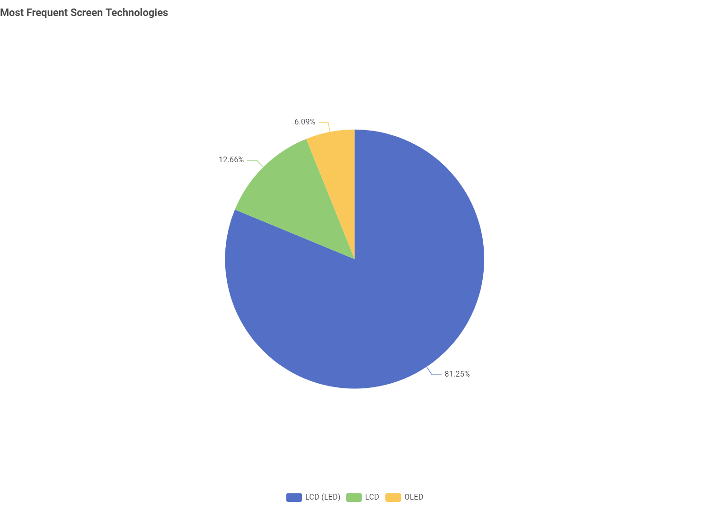
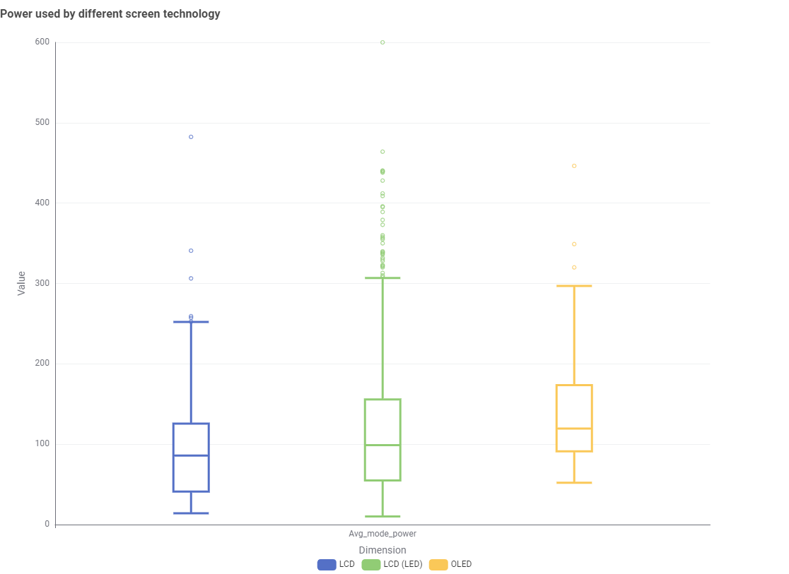
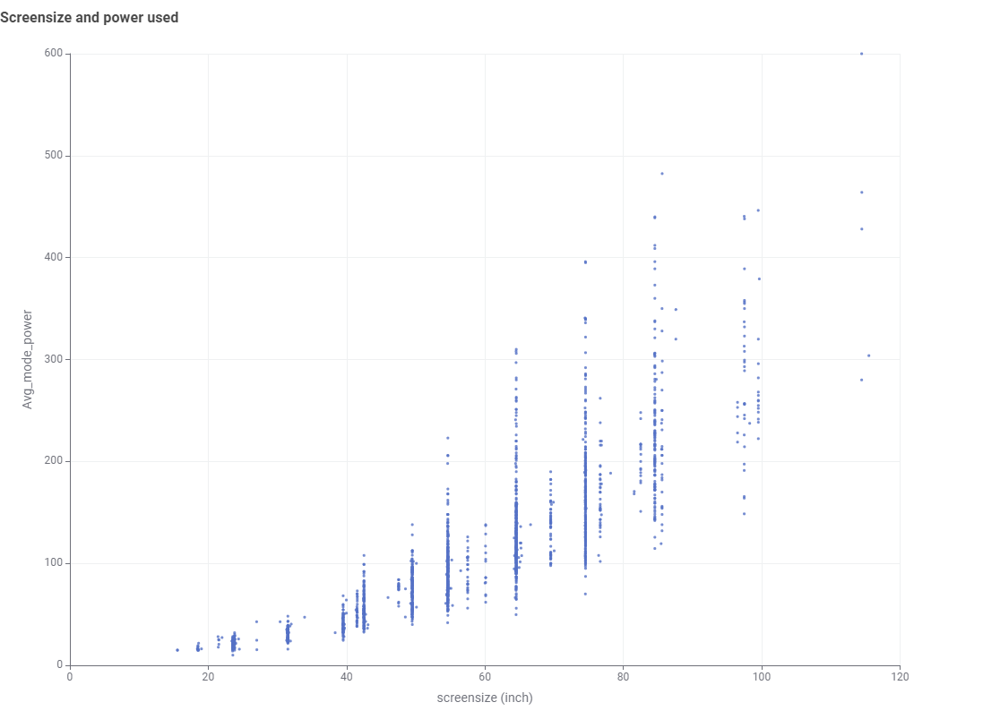
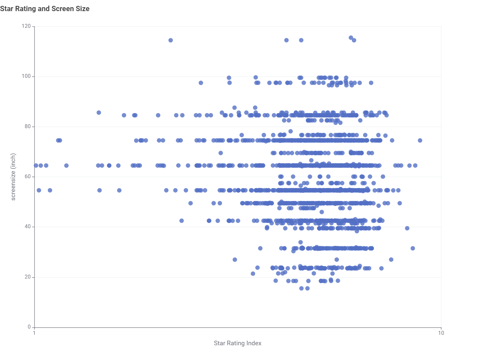

Energy Insights
Discover the latest trends and insights in TV energy consumption. We analyze data from the Australian government's energy rating website to bring you valuable information on how TVs are evolving in terms of energy efficiency.
Trends in Energy Efficiency
Over the past few years, there has been a significant improvement in the energy efficiency of televisions. Manufacturers are adopting new technologies that reduce power consumption while maintaining high performance and picture quality.
Most Frequent Screen Technology in Australia
Let's explore the most common screen technologies used in Australian televisions.

As depicted in the bar chart, LED technology is the most prevalent among Australian televisions, followed by LCD and OLED technologies. This trend reflects the market's preference for energy-efficient and cost-effective options.
Power used by different TV technologies
Have you ever wondered how much power different TV technologies use? Here's a quick look:

This box plot shows the power consumption for 3 types of screen technologies. As you can see, OLED TVs, in average, tend to consume more energy than LED and LCD TVs.
However, the traditional LCD models tend to have a wider range of power consumption depending on the specific features and size. Some LCD models can be quite efficient, while others are reported to consume more power than OLED models.
Energy consumption by screen size

Energy consumption of different TV sizes also varies significantly, with larger screens generally using more power.
Star rating for different screen sizes

Generally, the TVs sizes do not affect the star rating significantly. Each size range has the rating spread. However, some medium-sized (60-inch) TVs tend to have slightly low star ratings.
Acknowledgements
Data Source: All TV data is sourced from the Australian Government's official energy rating website at reg.energyrating.gov.au.
Data Analysis and Visualization: The insights and visualizations presented on this page were created using KNIME Analytics Platform